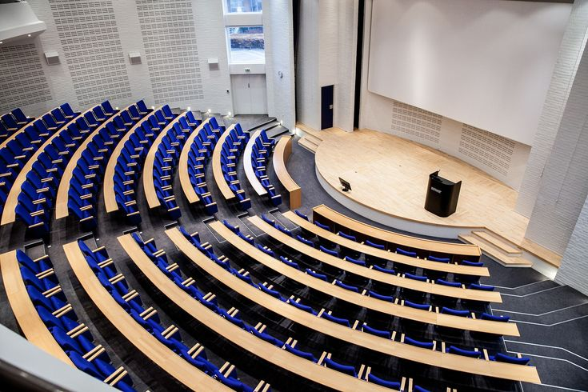
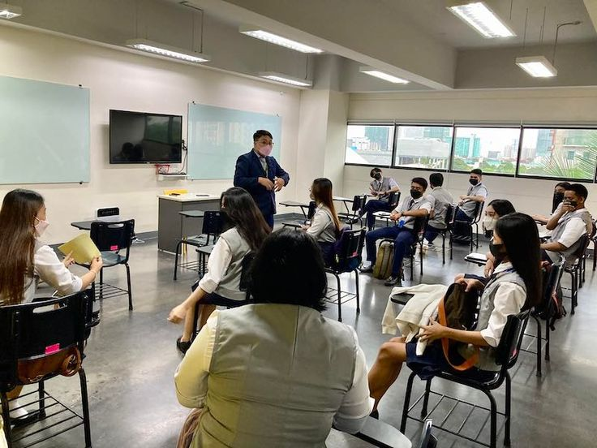

Curriculum Overview

Learn more about our curriculum and academic programs.
Academic Programs
Satya International School offers a comprehensive and well-rounded curriculum that is designed to meet the needs of students in the 21st century. Our academic programs are divided into several categories, including:
- Primary School Program: Our primary school program is designed for students in grades 1-5 and focuses on building a strong foundation in core subjects such as mathematics, language arts, science, and social studies.
- Secondary School Program: Our secondary school program is designed for students in grades 6-12 and offers a range of courses in subjects such as mathematics, language arts, science, social studies, and foreign languages.
- International Baccalaureate (IB) Program: Our IB program is designed for students in grades 11-12 and offers a rigorous and challenging curriculum that prepares students for success in higher education and beyond.
Curriculum Framework
Our curriculum framework is designed to provide students with a well-rounded education that prepares them for success in all areas of life. Our framework is based on the following principles:
- Student-centered learning: We believe that students should be at the center of the learning process and that our curriculum should be designed to meet their needs and interests.
- Inquiry-based learning: We believe that students should be encouraged to ask questions and explore topics in depth, and that our curriculum should be designed to support this type of learning.
- Interdisciplinary learning: We believe that students should be encouraged to make connections between different subjects and that our curriculum should be designed to support this type of learning.